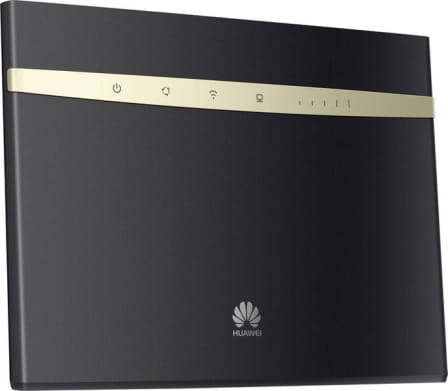
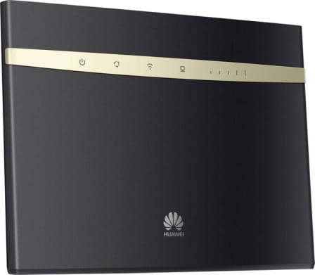
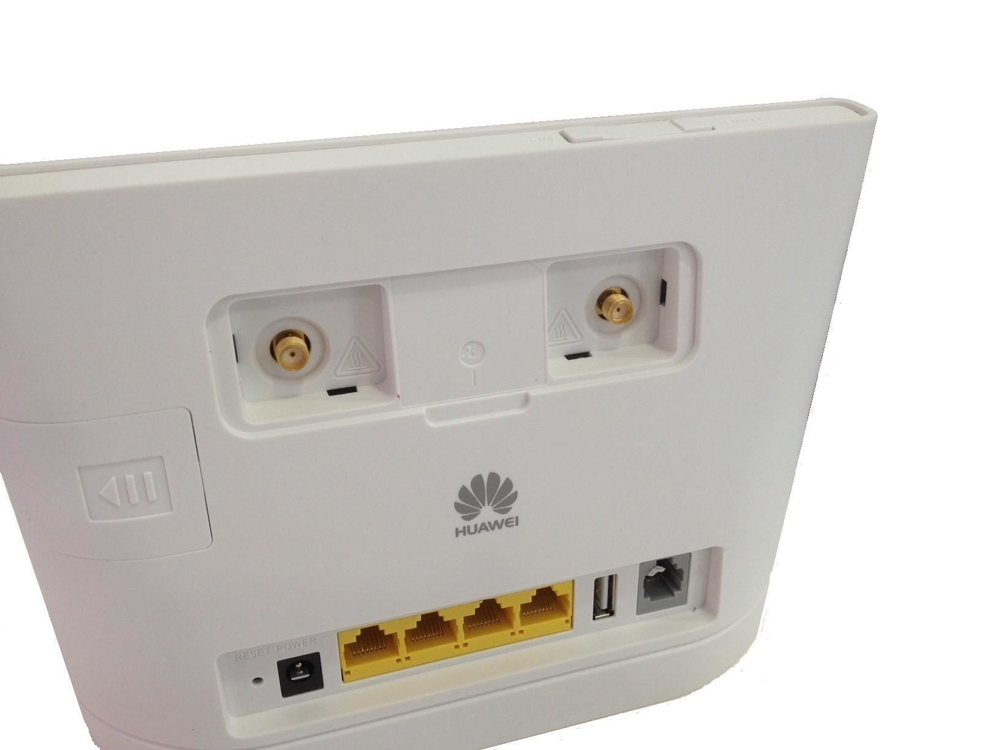
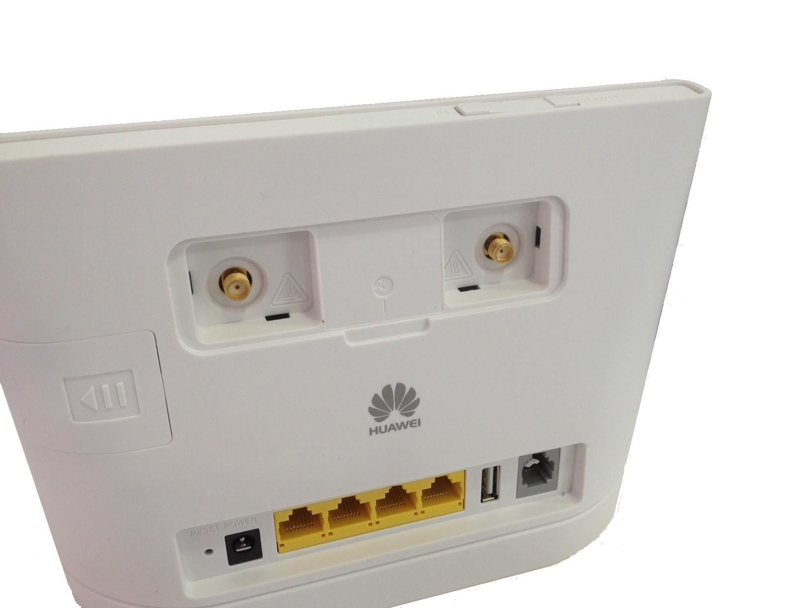

HUAWEI B315 LTE ROUTER, REFURBISHED - B315-1
R1,495.00
 >
>
 

Limited Stock | JHB | Free Delivery
SPECIFICATIONS
- The HUAWEI B315s-22 LTE CPE is a wireless gateway that integrates LTE and high-speed Ethernet uplink access, which provides users with flexible and diversified data access and voice services.
- It allows you to connect to the LTE network with a maximum speed of up to 150 Mb / s with up to 32 devices simultaneously
- There are 4 Gigabit Ethernet ports which allow you to connect four devices using a standard LAN port without Wi-Fi
- Network Mode: LTE/DC-HSPA+/HSPA+/HSPA/WCDMA/EDGE/GPRS/GSM
- Supported Network: 4G, 3G, 2G
- it has a complete suite of Voice over IP (VOIP) functions
- Network Ports:4 ports RJ45 Gigabit (10/100/1000) including 1 LAN / WAN port
- 1 RJ11 phone port for VoIP or CS voice and 1 USB 2.0 port to connect hard disk or printer
- Key: 1 Micro SIM card slot, 1 Power button, 1 WPS button, 1 RESET button
- Led Indicator: 1 Power LED, 1 Internet status LED, 1 Wi-Fi/WPS LED, 1 Ethernet LED, 1 group of signal strength indicators
- he B315 also features a USB 2.0 port for HDD, flash drives, network storage devices and printers
- Provides data service- Voice service- SMS- Security service- Local maintenance management function
- Support maximum data transmission rate of 300 Mbps 802.11b/g/n- SMS- IPv4 /IPv6 dual stack- Compatibility with RJ11 telephone ports;
| Number |
Weight |
Dimensions |
Barcode |
Warranty |
1 |
600g |
22 x 19 x 7cm |
1740005678 |
3 Months |